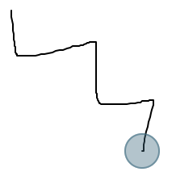
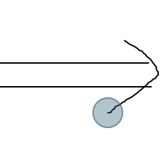

Lekh App
Introduction
Lekh App is an online whiteboard and intelligent diagramming tool. It empowers you to express your idea on Android devices, iPads and iPhones simply by sketching shapes with your finger. The best in class shape recognition technology of the Lekh App will recognize your rough sketches and will convert them into shapes.
You can use Lekh App to:
- Draw diagrams on device in offline mode
- Online whiteboarding for visual collaboration
Offline mode:
The offline (on device) mode works on iOS, Mac and Android app. You can use the offline mode to draw diagrams. You can use smart drawing mode to simply sketch and get high quality diagrams like flowchart, block diagrams, system architecture and mindmaps. You can also drag drop shapes from the shape library to create diagrams like UML, Network, UI Wireframe, flow chart, organizational chart, business process diagram, venn diagram, mind maps and any kind of illustrations.
Online mode:
You get a shared canvas (we call it Lekh Board) on which multiple users can draw at the same time. You can draw anything on it. You can draw all kinds of diagrams that you can draw in offline mode or you can simply scribble on it. You can also add sticky notes on the canvas. You can control the sharing of the board that means you can set write permission or read only permission to others. Use the online mode for following:
- Store your drawings on the cloud and access them from other devices such as desktop, any mobile device etc.
- Collaborate with others in real time. Multiple users can draw the canvas at the same time.
- Share your drawings with others.
User interface
Toolbar
- Selection mode:
- Dragging on screen will select multiple shapes.
- Click on a shape to select.
- Drag two fingers to scroll the canvas.
- Double click to add text anywhere
- Ctrl + click to select multiple shapes
- Ctrl + drag to scroll canvas
- Alt + drag a shape to duplicate it
- Scroll mode:
- Dragging on screen will scroll the canvas
- Scribble / draw mode:
- Click the draw tool twice to get color options.
- You can do free hand drawing. There is no shape recognition in this mode.
- Use two fingers drag to scroll the canvas.
- Ctrl + drag to scroll the canvas
- If you click on the canvas in this mode then it will draw a dot.
- Smart draw mode:
- Click the smart draw tool twice to get color options.
- You can draw basic shapes e.g. Rectangle, circles, lines etc and they will be recognized.
- You can draw connection lines and also draw arrows at the end of the connection lines.
- Double click anywhere to add / edit text.
- Use two fingers drag to scroll the canvas.
- Click on a shape to select.
- Ctrl + click to select multiple shapes.
- Ctrl + drag to scroll the canvas
- Alt + drag a selected shape to duplicate it.
- Erase mode:
- Dragging on canvas will erase shapes.
- Use two fingers drag to scroll the canvas.
- Text mode:
- Click anywhere to add text.
- Shape Library:
- Click to open shape library.
- More:
- Insert Image will pop up a dialog to pick an image.
In Mac, you can also drag-drop an image file from Finder to the canva. - Laser: Will show a laser pointer if you drag on screen.
This option will only appear in online mode.
This is usefull when colloaborating with others in real time. It will show your laser pointers to others. - Clear canvas will delete everything from canvas.
- Reset zoom will set the zoom to 100%
- Insert Image will pop up a dialog to pick an image.
- Info button:
- Click the info button to see a video clip explaining the usage of the currently selected tool.
Shape Library
On small screens, the shape library will appear on the bottom of the screen while for big screens such as tablets,
the shape library will appear on the left side of the screen.
- You can tap on a shape in the shape library to add them to canvas.
- Long press and drag the shape to drag drop to canvas.
- If you are using a mouse, then simply drag the shape to drag drop to canvas.
Selected Shape Options
After you select a shape (by clicking on it) the shape selection menu will appear on the top of the shape. The menus
will depend on what shape you select. The delete and duplicate will be common for all. For a rectangle, you get the option
to make it rounded and perfect square. For a triangle you get the option to make it an equilateral triangle and for an
ellipse you get the option to make it a circle.
Expanded menu items
- Delete the selected shape.
- Duplicate the selected shape. This is equivalent to copy and paste.
- Set line style i.e. width, color and dash type.
- Set fill color.
- Set text style i.e. font familry, alignment, bold italic etc.
- Set text color.
Expanded menu items
- Copy: copy the selected shape into clipboard.
- Cut: cut the selected shape.
- Move to front: Move the shape to the front. This option is useful when shapes are overlapping.
- Move to front: Move the shape to the back. This option is useful when shapes are overlapping.
- Copy style: copy the text and shape style of selected shape.
- Paste style: set the text and shape style from the last copied style.
- Copy size: copy the size selected shape into clipboard.
- Paste size: set the size of the selected shape from the value last copy size.
- Set size: get a dialog to set the size (in points) of selected shape.
- About Menu Items: textual description of the menu items that appears on the top.
Canvas Context Menu
Long press or right click on the canvas to get the context menu. You get items in the menu depending on where you long press on the canvas.
- Paste: paste the previously copied shape.
- Select All: select all shapes on the canvas.
- Insert Image: shows a popup to pick an image and add to canvas.
Pages
Lekh App supports multiple pages in a single document. Every page has a canvas.
You can organize your related projects into pages. When you export a document in PDF format,
then every page becomes a page inside the PDF document.
The pages can be used to organize different drawings of a single project.
For example - for a wireframe project, you can use one for every screen.
There is no hard and fast rule, you can use whatever way you want.
You can set the size of the page through settings. Size can be one of these:
Description of the UI
You can set the size of the page through settings. Size can be one of these:
- Infinite canvas.
- Auto size. This canvas will grow right size and bottom when you add more shapes
- Fixed size. You can choose one of the predefined size e.g. A4, A3 etc or set the size yourself for example 4 inch x 5 inch
Description of the UI
- Add a new page.
- List of pages. The currently active page appears in blue. Tap on the page name to make it active.
The delete, rename and duplicate buttons below act on the currently active page. - Drag to reorder the pages.
- Delete the currently active page.
- Rename the current active page.
- Create a copy of the currently active page.
Settings
Canvas settings
The pencil setting will appear on iPad only. If the pencil mode is turned on then in the draw and smart draw mode, the finger touch drag on canvas will be used for scrolling the canvas and the drawing can be only done with pencil.
Default Arrow: When you draw connections between two shapes in smart mode then you also get an arrow. You can change what kind of arrow you get by default.
- Page size: set the size of the active page. The size can be set to auto, infinite or a fixed size.
- Margin: draw a margin line on the canvas. This does not apply when the canvas size is infinite.
- Orientation: set orientation to landscape or portrait.
- Background: change background color of the canvas of currently active page.
The pencil setting will appear on iPad only. If the pencil mode is turned on then in the draw and smart draw mode, the finger touch drag on canvas will be used for scrolling the canvas and the drawing can be only done with pencil.
Default Arrow: When you draw connections between two shapes in smart mode then you also get an arrow. You can change what kind of arrow you get by default.
- None: No arrow at all
- Solid: solid arrow by default
- Regular: regular arrow by default
- Same as system: the canvas and toolbars will be light or drak according to the system settings.
- Always light: the canvas and toolbars will be always light mode irrespective of system settings
- Always dark: the canvas and toolbars will be always dark mode irrespective of system settings
- Recognize connetion: toggle to switch on or off the connection recognition in smart mode.
- Reduce resolution: reduce the resolution of inserted image to save size of the the document. The bigger image cuases documents to load slow.
- Gap: Whether to have a small gap between connection lines and the connected shapes.
- Resize: if this is on then the zoom gesture will resize the selected shape instead of zooming the canvas.
- Show info button: toggle to switch on or off the info button on canvas and toolbar.
- Delete cache: Majority of the shapes in shape library are downloaded when you first time use them. Clicking on the link will delete the download cache. This is a harmless operation.
- Align object: if this is on and you move a shape on the canvas then the selected shape will be snapped to the edges of other shapes.
- Show grid: show or hide grid lines on the canvas.
Export
Choose a format for exporting. If you want to print the drawings thes the PDF format is recommended.
You have export options depending which format you choose. There are no options for
the Lekh format. It simply exports the whole Lekh file which you can later import into the app.
- Pages: select list of page that you want to export.
- Export Region: whether to export the whole page (in case of fixed size canvas or auto grow canvas) or just the area which contains the drawings. For infinite canvas, you can only export the drawing area. If you choose the drawing area, then you have the option to set padding around your drawing area.
- Image Size: applicable only for JPG and PNG export. Choose x2, x3 or x4 in case you want higher resolution images.
- Include backgroud: applicable if exporting to JPG, PDF and SVG format. If this this true then the exported drawings will also include the background color if set.
Touch Gestures
Tap
- Use tap to select or unselect shapes in Select and SmartDraw mode.
Double Tap
- Use double tap to add / edit text anywhere on canvas or shapes.
Long Press
- Long press anywhere on canvas or shapes to get the canvas context menu.
Pinch Zoom
- Use pinch zoom gesture to zoom canvas or selected shapes.
Single Finger Pan
Single finger pan is touching and moving one finger on the screen. This is used to
- Draw in Scribble and SmartDraw mode
- Scroll the canvas in scroll mode
- Select multiple shapes in Select mode
- Delete shapes in Delete mode
Two Fingers Pan
- Two finger pan is touching and moving two fingers together on the screen. This gesture is used to scroll canvas in all modes.
Basic smart mode usage
|
Draw a shape |
Shape will be recognized |
|
Tap on shape to select |
Drag selected shape to move |
|
Double tap to add text |
Pinch gesture to zoom selected shape |
|
Select any shape by tapping |
Drag the corner of the selection rectangle to resize the shape |
|
Drag the top left corner of the selection rectangle to rotate |
While rotating the shape |
Shape recognition
| Drawing | Recognized shape |
|---|---|
|
|
|
|
|
|
|
 |
|
|
|
|
|
|

|
|
|
|
|
|
|
|
|
|
|
|
|
|
 |
|
|
|
|
|
|
|
|
|
|
Drawing and erasing arrow
| Drawing | Recognition |
|---|---|
|
|
|
|
|
|
|
|
|
|
|
|
Connecting shapes
| Drawing | Recognized connection |
|---|---|
|
|
|
|
|
|
|
|
|
|
|
|
|
|
|
|
|
|
|
|
|
|
|
|
Customizing shape
|
Tap on any shape to select |
Tap on any vertex or control point to get the vertex handle |
|
Vertex handle |
Move the vertex by dragging the vertex handle placing finger anywhere on the vertex handle |
Adding text
|
Double tap on any closed shape to add text |
Double tap on connection line to add text on connection line |
|
Double tap anywhere else to add floating text |
Custom Shape Library
Internet connection requirement
For managing custom shape libraries, you need to be connected to the internet and signed in. However once you have added shapes to your custom shape library and your custom library is visible in Shape Library UI, then you do not need to be signed-in or connected to the internet. Once you have added your custom library to the Shape Library UI then you can drag shape shapes from your custom library to the canvas.
Managing custom shape library
- From the board option menu, click "Manage Custom Shape Library"
- A dialog will open. From this dialog you can create / rename / delete custom shape library. You can also rename / delete / reorder shapes inside a custom library from this dialog.
Adding shapes to custom shape library
- Select a shape on the canvas
- From the selection dropdown menu, click "Add To My Shape Library"
- It will ask for shape name
- Then it will ask to choose which shape library you want to add. If there is no shape library then you can click the plus (+) button to create a new custom shape library
Showing and hiding custom library from the Shape Library UI
- Open Shape Library UI
- Click on the “Manage Shapes” on the bottom or the gear icon if you are using phone (small screens)
- From the top of the dialog, click on the plus (+) button
- It will list your custom libraries. Pick the one which you want to show into the Shape Library
- To hide you library, click the switch button from the list of the library
- If you click the cross (delete) button in this screen then it will remove the custom library from the Shape Library UI but this will not delete your shape library
Lekh App on web
Lekh App's home page
Lekh App's youtube channel
Lekh App on twitter
Lekh App's Facebook page
For bug report, feedback and suggestion, send email to info@lekhapp.com
Lekh App's youtube channel
Lekh App on twitter
Lekh App's Facebook page
For bug report, feedback and suggestion, send email to info@lekhapp.com